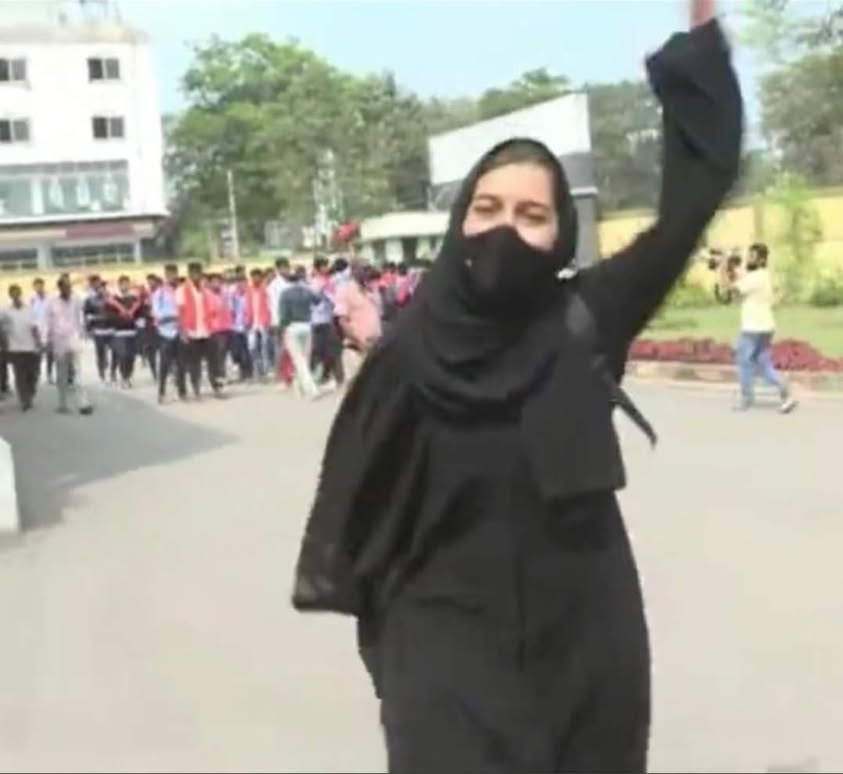

নারী পুরুষের সহযোদ্ধা৷ আমরা প্রথমে তাদেরকে মাইনাস করে আমাদের শক্তি প্রায় অর্ধেক…
১০ ফেব্রুয়ারি, ২০২২
নারী পুরুষের সহযোদ্ধা৷ আমরা প্রথমে তাদেরকে মাইনাস করে আমাদের শক্তি প্রায় অর্ধেক কমিয়ে দিয়েছি৷ তাদের, মনের সাহস ও চেতনাকে দমিয়ে রেখেছি৷
আজ যে মুসকান পৃথিবীকে কাঁপিয়ে তুলেছে সে তার নিজ চেতনা ও সাহস থেকে যদি এই কাজটি না করতো তবে গতকাল পর্যন্ত হয়তো তার বিরুদ্ধে হাজারো ফাতোয়া ছিলো:
& মেয়ে হয়ে কেনো কলেজে পড়ে?
& মেয়ে হয়ে কেন বাইক চালায়?
& মেয়ে হয়ে কেন তার গলার আওয়ায উঁচু?
এভাবে আমরা নারীদের চেতনা ও সাহসকে নিস্পেষিত করে দিয়েছি৷
অথচ সাহাবাদের যুগ দেখুন৷ মসজিদে যেমন তাদের সমাগম ছিলো, জিহাদের ময়দানেও তাই৷ এভাবে নারীরা ছিলো পুরুষের সহযোদ্ধা৷
© Mustafa Sohail Helali
